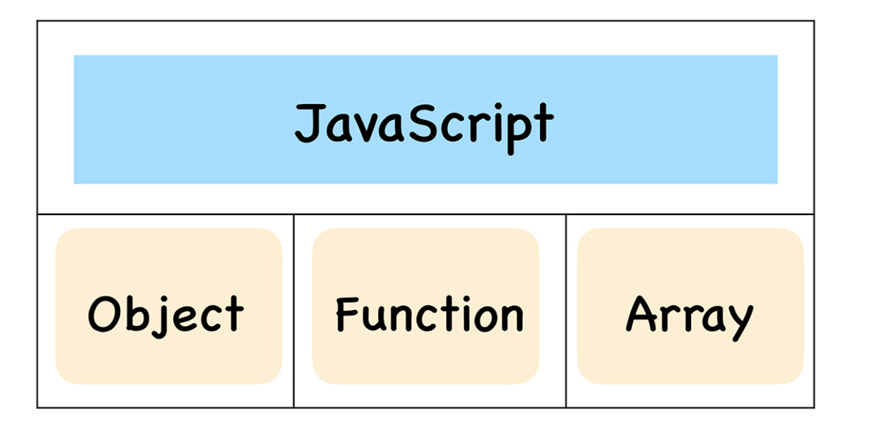

02 | 函数即对象：一篇文章彻底搞懂JavaScript的函数特点
什么是js中的对象?它和面向对象语言中的“对象”有什么区别?
- js是一门基于对象的语言,可以说,js中大部分的内容都是由对象构成的,诸如函数,数组,也可以说js是建立在对象之上的语言 
这些对象在运行时可以动态修改其内容,这就造就了js的超级灵活特性.
虽然js是基于对象设计的,但是它却不是一门面向对象的语言,因为面向对象语言天生支持封装,继承,多态,但是js并没有直接提供多态的支持,因此要在js中使用多态并不是一件容易的事

js中实现继承的方式,只是在对象中添加一个称为原型的属性,把继承的对象通过原型链接起来,就实现了继承,我们把这种继承方式称为基于言行链继承
对象的属性值有三种类型:
- 原始类型:null,undefined,boolean,number,string,bigint,symbol
- 对象类型
- 函数类型
函数到底关联了哪些内容?
- 函数作为一个对喜庆,它有自己的属性和值,所以函数关联了基础的属性和值
- 函数之所以称为特殊的对象,这个特殊的地方是函数可以“被调用”,所以一个函数被调用事,它还需要关联相关的执行上下文